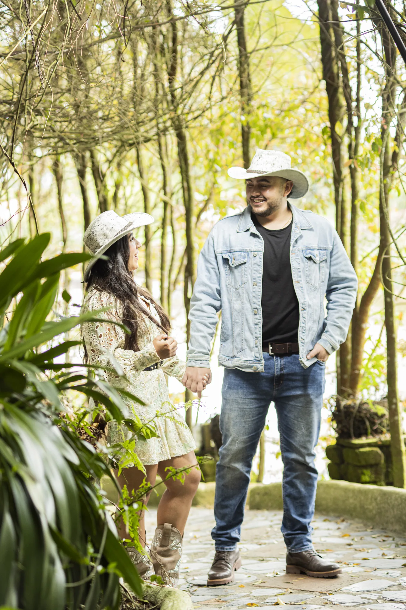
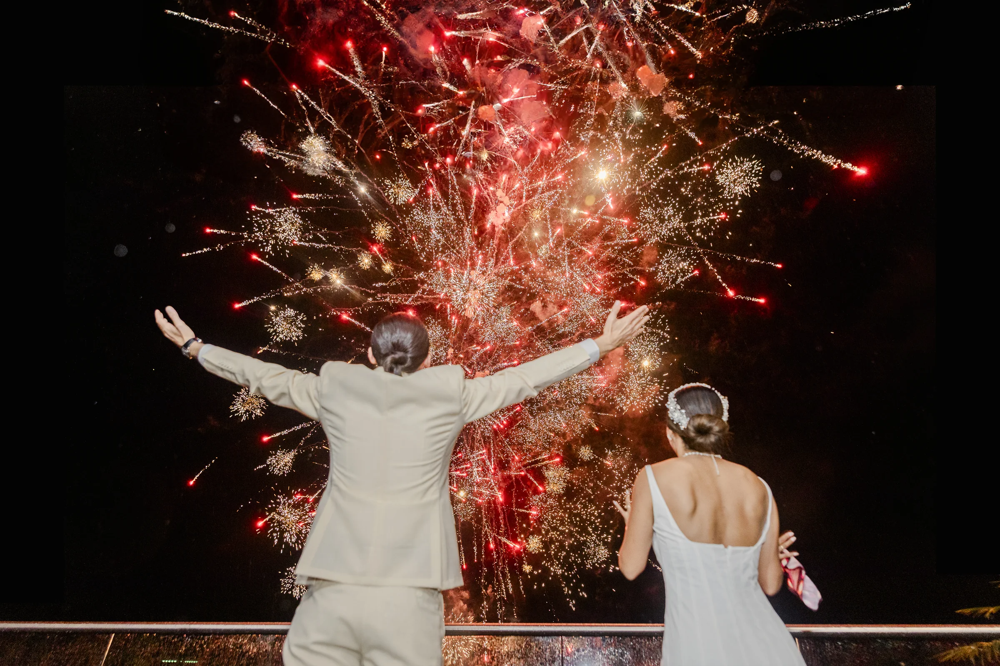
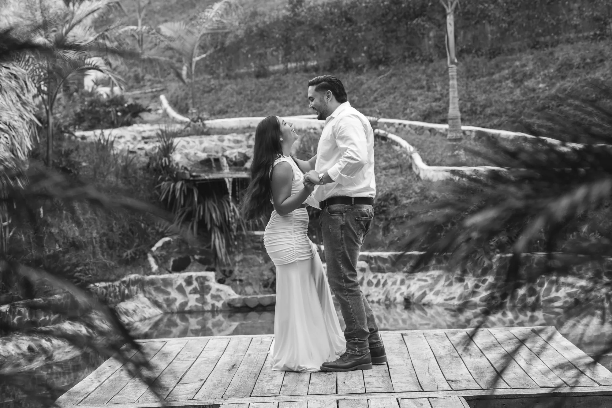
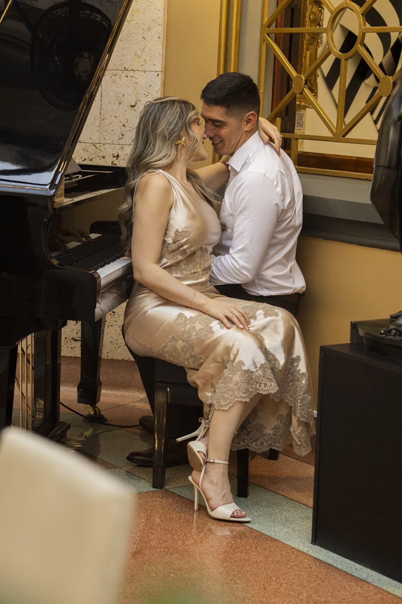

Hay fotógrafos que toman fotos y fotógrafos que detienen el tiempo. Bodas, eventos y retratos con mirada editorial, en Medellín y toda Colombia.
+480
Historias capturadas
8 años
De experiencia
10 días
Entrega de galería
★ 5.0
Parejas felices
Entre tantos fotógrafos en Medellín, elegir al indicado es elegir cómo vas a recordar tu historia. Yo crecí entre cámaras y rollos fotográficos: detener el tiempo es mi oficio desde niño.— Esteban Jiménez · Fotógrafo · Medellín, Antioquia
No te lo contamos, te lo mostramos
Un minuto basta para entender por qué cientos de personas en Medellín, Colombia, nos confiaron sus momentos irrepetibles.
Fotografía y video cinematográfico · Producción propia
Una mirada editorial
Así fotografiamos en Medellín y las montañas de Antioquia: con luz natural, emoción real y cero poses forzadas.



Tu historia en tres pasos
01
Cuéntanos por WhatsApp qué quieres fotografiar, la fecha y el lugar. Respondemos el mismo día.
02
Recibes una propuesta clara y a tu medida. Con un abono separas tu fecha en el calendario.
03
En máximo 10 días tienes tu galería online privada, lista para descargar y compartir.
Lo que dicen de nosotros
★★★★★
"Confiamos plenamente en su talento y en el amor que le ponen a lo que hacen. Gracias por acompañarnos en un día tan importante."
★★★★★
"Qué belleza de fotografías, se nota la dedicación y la entrega. Quedamos profundamente enamorados del trabajo que realizaron."
★★★★★
"Un trabajo hermoso, profesional e impecable. Nos encantó todo, de principio a fin."
Antes de escribirnos
Bodas, prebodas, quince años, maternidad, eventos sociales, retratos y fotografía comercial. También video cinematográfico y tomas aéreas con drone, en Medellín, Antioquia y el resto de Colombia.
Depende del tipo de evento, las horas de cobertura y los entregables. Escríbenos por WhatsApp con tu fecha y te enviamos una cotización clara el mismo día, sin compromiso.
En máximo 10 días recibes una galería online privada con la selección editorial completa, lista para descargar en alta resolución y compartir con quien quieras.
Sí. Aunque somos fotógrafos de Medellín, viajamos a cualquier municipio de Antioquia y a todo el país para acompañar tu historia.
Escríbenos hoy y recibe tu cotización personalizada en menos de 24 horas.